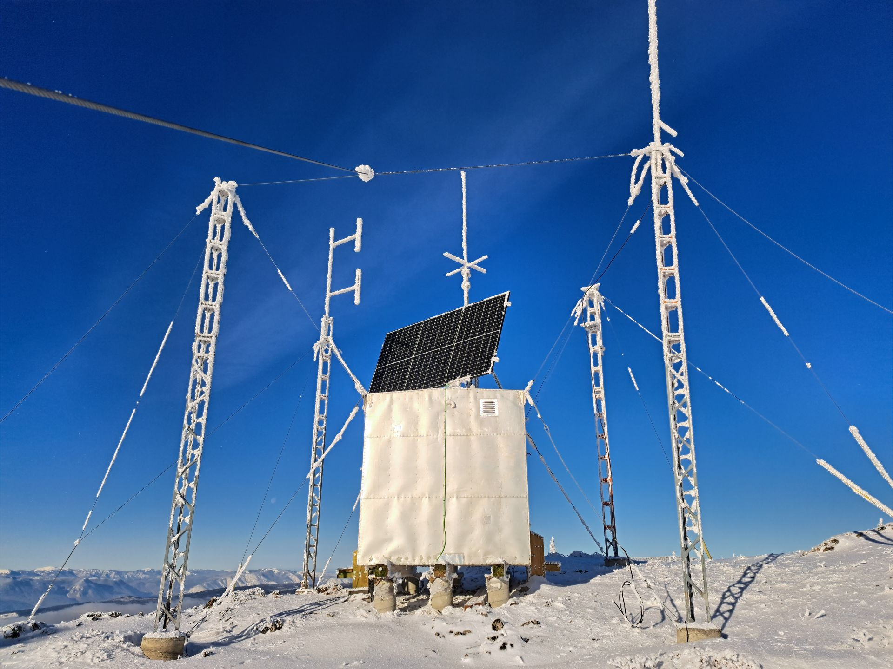
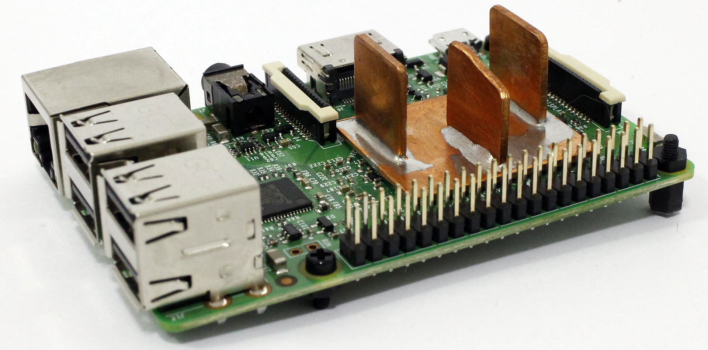
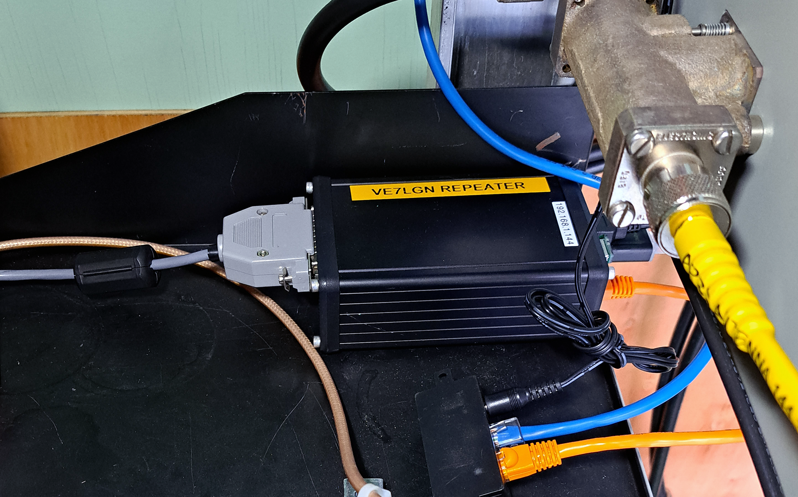

Raspberry Pi devices and cold temperatures
Back to StoriesStory 728
Wed, 2022-12-28 11:08 — VE7FSR

December 20, 2022 We have been doing some unplanned and impromptu low temperature experiments at VE7LGN on South Forge Mtn .
With the recent arctic cold front, outside (and inside at South Forge!) temperatures at Mt.
Lolo and South Forge plunged to below -30C.
I was down visiting Lee, VE7FET, and we were watching the temperatures drop steadily at the KARC repeater sites where we have remote temperature monitoring.
At Lolo we have an outside temp sensor, and the lowest recorded was just below -31C.
The rest of our sites we only have inside temp sensors, and at Iron Mtn (with the heat on) the inside temp was between 2C and 8C; at Mt.
Lolo (with the heat on) it was 14C inside.
At Dufferin it was between -2C and -6C ( inside! ).
The temperature of the charge controller heatsink at South Forge was -26C, and the battery temperature was -32C.

Lee got curious about the temperature of the Raspberry Pi device we use to run the Allstar repeater software for VE7LGN.
When we checked the temperature of the SoC (CPU) of the Raspberry Pi it was reporting 1C!
The rest of the Pi would have been at -26-30C!
According to the Raspberry Pi Foundation, the certified operating temperature for a Raspberry Pi is between 0°C and 85°C.
The SoC (CPU) chip is certified from -40°C to 85°C, but the LAN chip is only certified from 0°C to 70°C.

So the VE7LGN Raspberry Pi was operating at a temperature much lower than it was certified for!
What's even more amazing is that the Pi managed to maintain the network connection at a much lower temperature than the LAN chip is certified for.
In doing some research we discovered that some Pi enthusiasts did some testing with a Raspberry Pi 4 running a heatsink cooled by liquid nitrogen and when the SoC temp got below 0C a bug in the Pi code was revealed and instead of reporting something like -2C, the Pi instead reported 4 million degrees! https://www.hackster.io/news/sensor-equipment-creates-the-coolest-raspberry-pi-4-with-a-coolipi-case-and-liquid-nitrogen-cfe07484d13a https://www.youtube.com/watch?v=RbzKM5XxlOA The LGN Pi went silent on December 22 around 11am.
Jim VE7HS, in Logan Lake, said the temperature outside was -38C when he was walking his dog!
Lee and I surmised that the prolonged cold snap finally got to the LAN chip, or the SoC, or both!?
On December 27, Myles VE7FSR made the trip to South Forge by snowmobile (it was +1C and raining) to reset the LGN Pi and discovered that the Pi had not "locked up" or shutdown but rather the 3A fuse powering the Daniels 48-12V DC-DC converter had blown.
So if the fuse hadn't blown, we might have recorded even lower temperatures from the SoC.
Who knows, we may have even recorded 4 million degrees!
Pi Insulated Case.png VE7LGN Allstar Pi in Insulated Case.png Pi Insulated Case Heater.png To avoid future cold snaps impacting the LGN Allstar Pi, Myles built an insulated "Pi Igloo" out of rigid foam and aluminized HVAC tape.
The insulated "case" also has a 1K ohm 10W power resistor inside, glued to an aluminum heat spreader.
The resistor, which can provide almost 3W of heat from 50VDC (the solar plant battery voltage), will be powered from a PoE port on the Mikrotik Hex POE router.
Lee is planning to write a script to monitor the SoC temperature, and if it gets too cold the "heater" will be enabled.
Once the temperature inside the "case" reaches a safe point, the heater can be turned off.
VE7LGN Repeater.png VE7LGN SoC Temperatures.png The LGN Allstar Pi was placed inside the "Igloo" and sealed shut with the tape.
Initial reporting shows that the "Igloo" is doing its job, and the Pi is reporting normal SoC temperatures (without the heater).
Of course the inside shack temperature was around 0-3C (as reported by the solar charge controller heat sink and battery temperature sensors) so we won't really know how well the "Igloo" works until normal winter temperatures return.
Lee has been programming up a storm, and he now has Nagios polling the various sensors and is storing that information in a database.
He is using Grafana to display the temperatures in a nice graphical display accessible from the web.
But that's a story for another article!